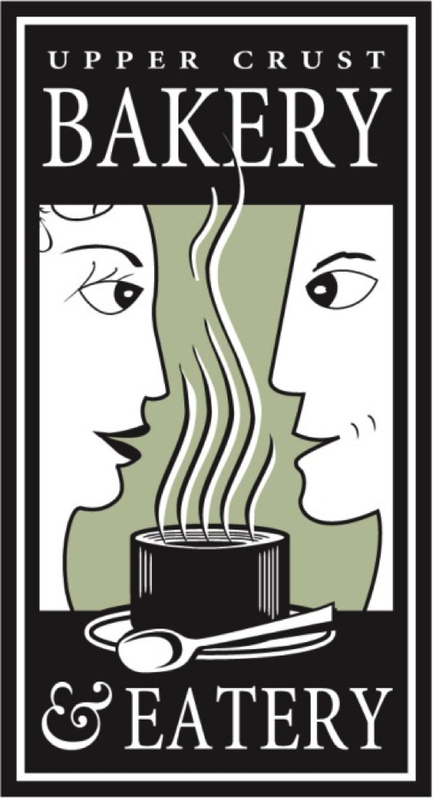
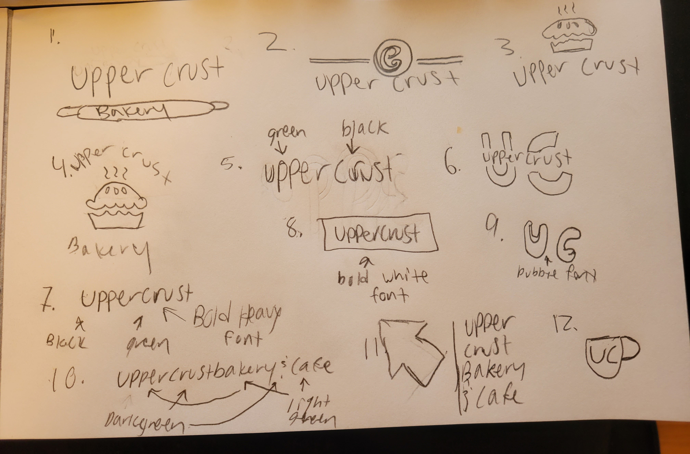
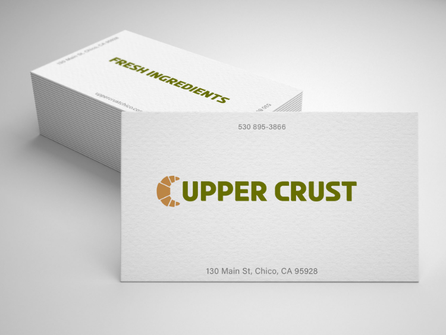
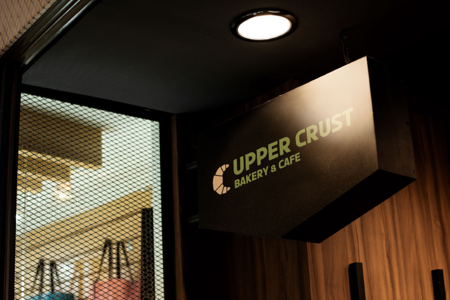
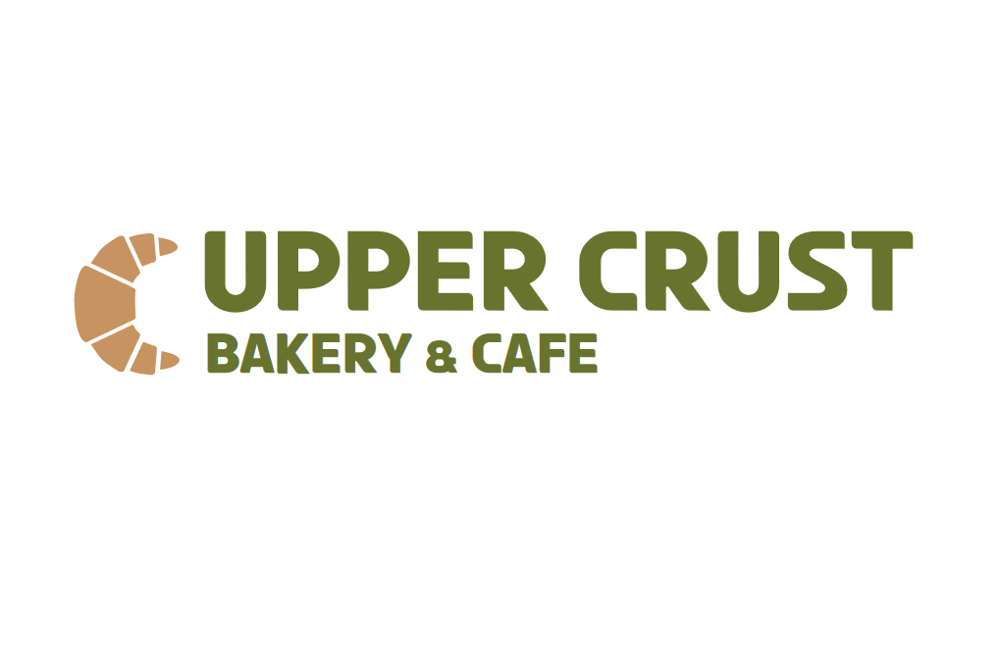

Upper Crust Logo Redesign
Upper Crust Bakery and Cafe's redesigned logo harmonizes tradition and modern aesthetics, delivering a captivating visual identity.
Project Details / Background
Problem:
The original Upper Crust Bakery and Cafe logo suffered from being outdated and overly cluttered.
In a market where visual identity plays a significant role, the old logo failed to resonate with modern consumers. Its intricate design made it challenging to scale effectively across various mediums, hindering brand recognition. The goal was to create a new logo that reflects the brand's essence in a contemporary manner.
Role: Sole designer and researcher
Duration: 4 weeks
Tools:
1. Market Research: In researching bakery and cafe logos, successful designs commonly incorporated clean and timeless typography, warm and inviting color palettes, balanced symmetry, clever use of negative space, and overall versatility for consistent application across various mediums.
2. Design Software: Utilized Adobe Photoshop, Adobe Illustrator to create a minimalistic modern feel to the brand.
3. Branding Color: Utilized similar colors to the original to help keep the feeling of the old branding.
4. Minimalist Design Principles: Employed principles of minimalism to create a clutter-free and appealing logo design.
Solution:
Redesigned Logo with a Modern, Minimalist Approach
1. Simplified Design: Eliminated unnecessary details to achieve a cleaner and more modern aesthetic, ensuring the logo remains visually impactful across various sizes.
2. Contemporary Typography: Updated the font to a more modern and readable style, enhancing brand legibility and appeal.
3. Versatility: Ensured the new logo is versatile enough to be applied seamlessly across diverse marketing materials, from business cards to signage.
4. Color Harmony: Selected a harmonious color palette that not only aligned with the brand's identity but also conveyed warmth and friendliness, inviting customers to experience the bakery's offerings.

Research:
Industry Analysis and Design Trends
1. Studied logos of similar businesses to identify design trends and understand what resonates with the target audience.
2. Explored key milestones in the historical evolution of bakery and cafe logos, with a specific focus on successful redesigns. The analysis aimed to understand the factors contributing to their success.
3. Examined global design trends to ensure that the new logo aligns not only with local preferences but also with broader international aesthetics, catering to a diverse customer base.
4. Examined the principles of color psychology and minimalist design to inform the choices made in the redesigned packaging.
Challenges:
1. Balancing Tradition and Modernity: Similar to the Sunbelt Bakery project, finding the right equilibrium between retaining the brand's heritage and adopting a modern look was a challenge.
2. Adaptation to Digital Platforms: Ensuring the new logo's effectiveness across various digital platforms and social media presented a technological challenge. The design had to remain visually compelling and recognizable across different screen sizes and resolutions.
3. Consistency in Branding: Ensuring the redesigned logo aligns seamlessly with the overall brand identity and values of Upper Crust Bakery and Cafe was crucial. Achieving this consistency while introducing a fresh and modern look demanded strategic decision-making.
Learnings:
1. Adaptability: The ability to create a logo that is adaptable to various applications without compromising its core identity is crucial for a successful redesign.
2. Strategic Modernization: Updating visual elements while preserving key brand elements ensures a modernized logo that maintains brand recognition and loyalty.
3. Market Research: In-depth market research and competitor analysis are essential for understanding industry trends and staying ahead of the Competition.
The original Upper Crust Bakery and Cafe logo suffered from being outdated and overly cluttered.
In a market where visual identity plays a significant role, the old logo failed to resonate with modern consumers. Its intricate design made it challenging to scale effectively across various mediums, hindering brand recognition. The goal was to create a new logo that reflects the brand's essence in a contemporary manner.

Role: Sole designer and researcher
Duration: 4 weeks
Tools:
1. Market Research: In researching bakery and cafe logos, successful designs commonly incorporated clean and timeless typography, warm and inviting color palettes, balanced symmetry, clever use of negative space, and overall versatility for consistent application across various mediums.
2. Design Software: Utilized Adobe Photoshop, Adobe Illustrator to create a minimalistic modern feel to the brand.
3. Branding Color: Utilized similar colors to the original to help keep the feeling of the old branding.
4. Minimalist Design Principles: Employed principles of minimalism to create a clutter-free and appealing logo design.
Solution:
Redesigned Logo with a Modern, Minimalist Approach
1. Simplified Design: Eliminated unnecessary details to achieve a cleaner and more modern aesthetic, ensuring the logo remains visually impactful across various sizes.
2. Contemporary Typography: Updated the font to a more modern and readable style, enhancing brand legibility and appeal.
3. Versatility: Ensured the new logo is versatile enough to be applied seamlessly across diverse marketing materials, from business cards to signage.
4. Color Harmony: Selected a harmonious color palette that not only aligned with the brand's identity but also conveyed warmth and friendliness, inviting customers to experience the bakery's offerings.

Research:
Industry Analysis and Design Trends
1. Studied logos of similar businesses to identify design trends and understand what resonates with the target audience.
2. Explored key milestones in the historical evolution of bakery and cafe logos, with a specific focus on successful redesigns. The analysis aimed to understand the factors contributing to their success.
3. Examined global design trends to ensure that the new logo aligns not only with local preferences but also with broader international aesthetics, catering to a diverse customer base.
4. Examined the principles of color psychology and minimalist design to inform the choices made in the redesigned packaging.
Challenges:
1. Balancing Tradition and Modernity: Similar to the Sunbelt Bakery project, finding the right equilibrium between retaining the brand's heritage and adopting a modern look was a challenge.
2. Adaptation to Digital Platforms: Ensuring the new logo's effectiveness across various digital platforms and social media presented a technological challenge. The design had to remain visually compelling and recognizable across different screen sizes and resolutions.
3. Consistency in Branding: Ensuring the redesigned logo aligns seamlessly with the overall brand identity and values of Upper Crust Bakery and Cafe was crucial. Achieving this consistency while introducing a fresh and modern look demanded strategic decision-making.
Learnings:
1. Adaptability: The ability to create a logo that is adaptable to various applications without compromising its core identity is crucial for a successful redesign.
2. Strategic Modernization: Updating visual elements while preserving key brand elements ensures a modernized logo that maintains brand recognition and loyalty.
3. Market Research: In-depth market research and competitor analysis are essential for understanding industry trends and staying ahead of the Competition.
Image Gallery

Upper Crust buisness card with redesigned logo.

Upper Crust signage with redesigned logo.
Upper Crust logo Variations.

Main Upper Crust logo redesign.
Sketches of intial Upper Crust logos.